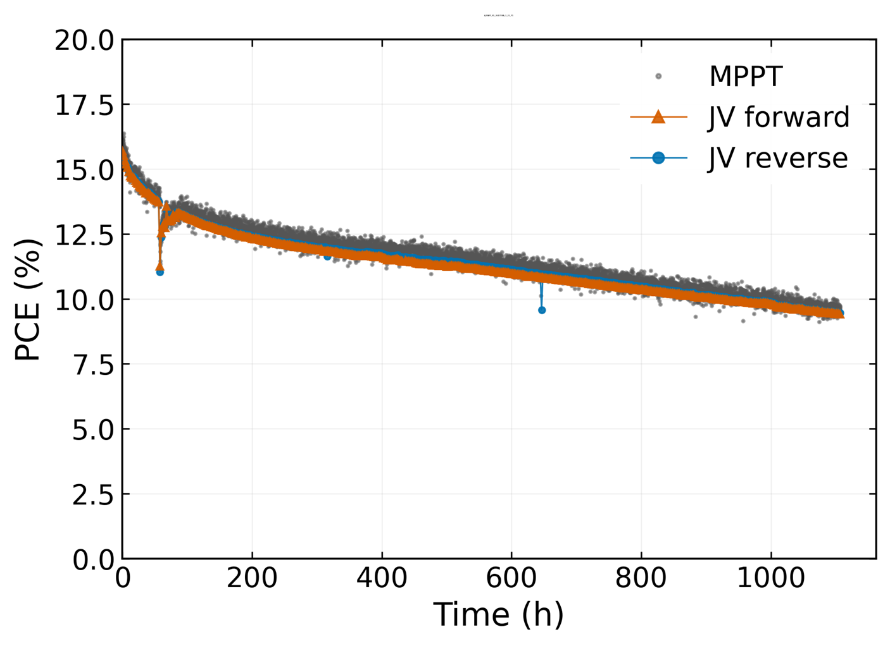

Explore the extra plots
Point your phone at the PCE graph in the poster. Additional plots will appear on its right.
Allow camera access when asked.
Loading the plots…
Turn your phone sideways and keep the whole PCE graph in view, with space on its right.
Layout previewCamera off

Printed PCE graphAR plots